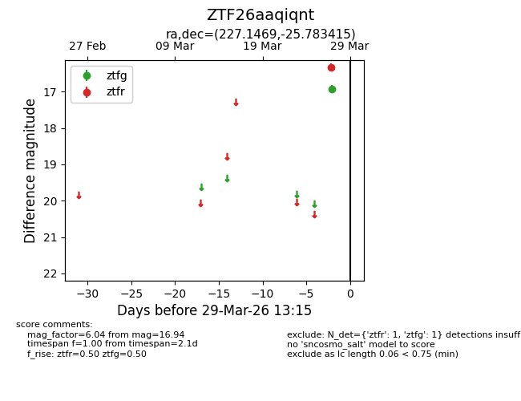
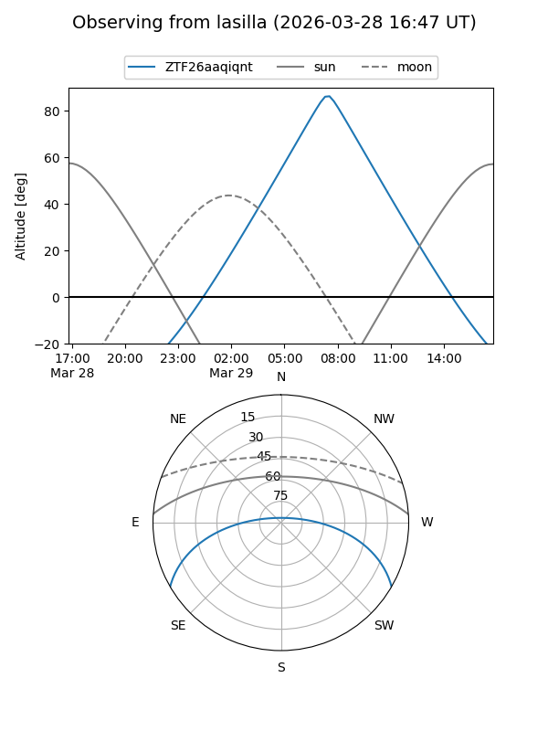
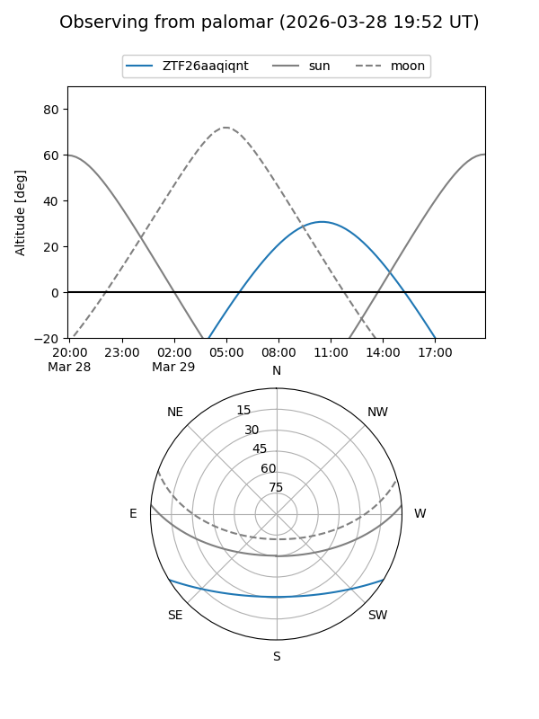

ZTF26aaqiqnt
Target ZTF26aaqiqnt at 2026-03-29 13:18
Aliases and brokers:
FINK: link
Lasair: link
ALeRCE: link
alt names
ZTF26aaqiqnt (ztf,fink_ztf)
Coordinates:
equatorial (ra, dec) = 227.1469,-25.78341
equatorial (HMS+DMS) = 15:08:35.26,-25:47:00.29
galactic (l, b) = (337.8610,+27.63145)
Flags:
Photometry:
last ztfg=16.94, ztfr=16.34
1 ztfg, 1 ztfr detections
Lightcurve

Visibility


Additional plots